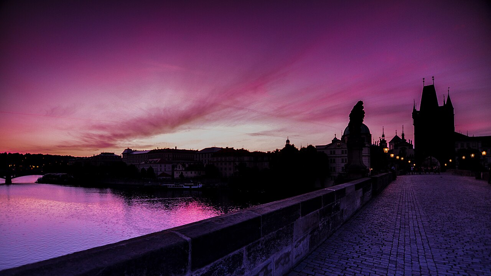

Чехия

Прага — город, который выглядит как декорация и живёт как обычная столица, и это сочетание и есть её секрет. Карлов мост идите на рассвете: тридцать статуй, туман над Влтавой и никого — через час всё это станет аттракционом, а вы успеете раньше. Староместская площадь работает по расписанию астрономических часов: толпа собирается к часу: вы встречаете куранты, а затем уходите в Йозефов — еврейский квартал с кладбищем, где камни стоят друг на друге поколениями. Пиво в Праге — гражданское право: кружка пльзеньского у стены в шинке дешевле воды, а смиховские вари с солодовым профилем объясняют, почему чехи пьют больше всех и при этом ходят по горам без одышки. За городом — Кутна-Хора с костницей, украшенной костями сорока тысяч человек: мрачная, но честная история, и Чешский Крумлов — город-петля на излучине Влтавы. Кухня простая и честная: свичкова с кнедликами — главное здесь кнедлики, которые работают как губка для соуса. Прага награждает тех, кто встанет рано.
Что знать перед поездкой
- Карлов мост — на рассвете
- Часы на Староместской площади — к началу часа
- Пиво в шинке дешевле воды — это норма